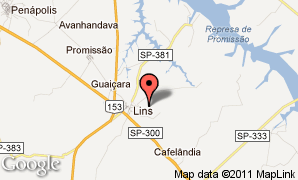

Você está chegando aqui na nossa cidade. Procura por um bom local para fazer sua refeição. Nós indicamos a churrascaria estação 101. Ambiente agradável, cardápio variado e um tempero sem igual. Churrascaria do Alemão, espeto corrido com completo Bufett. Serve também comida em quilo. Para acompanhar, toda linha de bebidas. No café da manhã, no almoço ou no jantar, prefira a Churrascaria 101, o endereço mais saboroso da cidade. Em frente ao posto do Gringo, no centro.


Lins - SP
Copyright © 2021 - Estação 101 - Todos os direitos reservados